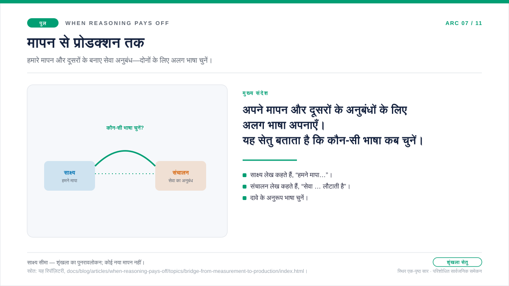

सेतु-लेख · साक्ष्य-परत और संचालन-परत के बीच
मापन से प्रोडक्शन तक
पाँचों साक्ष्य-लेख पढ़ने के बाद केवल निष्कर्ष नहीं, निर्णय की एक आदत बचती है। रीज़निंग स्तर इसलिए न बढ़ाएँ कि वह अधिक सक्षम सुनाई देता है; लागत, गुणवत्ता, लेटेंसी और टोकन-संरचना को साथ पढ़ें और अतिरिक्त टोकन वहीं खर्च करें जहाँ वे वास्तविक लाभ दें। बेंचमार्क में स्तर चुनने के लिए यह पर्याप्त है, लेकिन सक्रिय सेवा चलाने के लिए नहीं। वास्तविक ट्रैफ़िक में अनुरोध थ्रॉटल, पुनःप्रयास, कैश और स्पिलओवर से गुज़रते हैं तथा क्षमता वास्तविक परिस्थितियों के अनुसार तय होती है। इसलिए सवाल बेंचमार्क में रीज़निंग कहाँ लाभकारी रही? से बदलकर प्रोडक्शन में उस निर्णय को सुरक्षित कैसे बनाए रखें? हो जाता है। यह सेतु-पृष्ठ उसी बदलाव की बात करता है।

यह सेतु-पृष्ठ क्यों मौजूद है
पाँचों साक्ष्य-लेख एक सवाल का उत्तर देते हैं: रीज़निंग टोकन कब खर्च करना सही है। वे किसी वर्कलोड को मापकर लागत को गुणवत्ता, लेटेंसी और टोकन-संरचना के साथ पढ़ते हैं। लेकिन प्रोडक्शन में निर्णय स्थिर नहीं रहता। वही प्रॉम्प्ट बार-बार आता है, दूसरे सक्रिय ट्रैफ़िक के साथ कैश व्यवहार से गुज़रता है, कभी 429 लौटाता है और आरक्षित क्षमता के लिए प्रतिस्पर्धा करता है। बेंचमार्क ने टोकन कब खर्च करना है, यह बताया; पर जिन परिस्थितियों पर परीक्षण-तंत्र का नियंत्रण नहीं, वहाँ उसे सुरक्षित रूप से कैसे खर्च करते रहना है, यह अलग सवाल है।
यही अंतर इस सेतु-पृष्ठ की वजह है। यह न नया मापन है, न संचालन विनिर्देश; यह दोनों के बीच हस्तांतरण टिप्पणी है। साक्ष्य-परत निर्णय तक पहुँचाती है और संचालन-परत उसे उन परिस्थितियों में निभाती है जिन्हें बेंचमार्क ने नहीं देखा। स्पष्ट विभाजन से पाठक प्रलेखित सेवा-व्यवहार को “हमने मापा” नहीं समझते और हमारे मापे मान को “प्लेटफ़ॉर्म का वादा” नहीं मानते। काम, साक्ष्य और स्वर अलग हैं।
प्रश्न
साक्ष्य वाली आदत कब संचालन वाली आदत बननी चाहिए, और दोनों के बीच क्या चीज़ साथ चलती है?
साक्ष्य
साक्ष्य-परत के पाँचों विषय-लेख एक ढाँचा अपनाते हैं। हर लेख एक वर्कलोड—छोटे तथ्यात्मक उत्तर, बहु-चरणीय रीज़निंग, टूल-एजेंट, छिपे रीज़निंग टोकन या मॉडलित PAYG/PTU क्रॉसओवर—चुनता है और लागत, गुणवत्ता, लेटेंसी व टोकन-संरचना साथ रखता है। लागत बढ़े, तो साथ में गुणवत्ता देखी जाती है; गुणवत्ता सीमा पार करे, तो साथ में लेटेंसी। हर लेख ऐसा निर्णय-नियम देता है जो सटीक संख्याएँ बदलने पर भी उपयोगी रहता है।
निर्णय
संचालन में सटीक संख्याएँ नहीं, साक्ष्य से बनी आदत साथ ले जाएँ। संचालन-लेख बेंचमार्क नहीं; वे आधिकारिक विनिर्देश पर रखी नीति की तरह लिखे गए हैं। स्तर 1 के प्रलेखित व्यवहार, स्तर 2 के संचालन-अनुमान और स्पष्ट साक्ष्य-सीमा वाला अनुशासन उन प्रश्नों पर लागू होता है जिनका उत्तर कोई एक बेंचमार्क कॉन्फ़िगरेशन नहीं दे सकता।
स्वर क्यों बदलता है
साक्ष्य-लेख कहते हैं: “हमने मापा।” मापन के लिए यही सही स्वर है। इससे नतीजे की ज़िम्मेदारी और अनिश्चितता स्पष्ट रहती है तथा पाठक नमूने पर सवाल कर सकता है। संचालन-लेख कहते हैं: “Microsoft Learn में अनुबंध प्रलेखित है और उससे यह व्यावहारिक नियम निकलता है।” अनुबंध के लिए यही सही स्वर है। वह स्रोत दिखाता है, गारंटी और अनुमान अलग रखता है और संचालक को नया रन किए बिना आगे बढ़ने देता है।
बेंचमार्क वाला स्वर अपने मापन से आए उत्तर के लिए सही है। संचालन वाला स्वर किसी अन्य पक्ष द्वारा बनाए रखे अनुबंध को रनबुक में बदलने के लिए सही है। प्रलेखित व्यवहार को “हमने मापा” या अपनी प्रति-स्तर लागत-रेखा को “Microsoft Learn ऐसा कहता है” कहना दोनों दावों को कमज़ोर करता है। यह विभाजन असंगति नहीं, डिज़ाइन की विशेषता है।
व्यवहार में यह फ़र्क़ तीन जगह साफ़ दिखता है:
- काल। साक्ष्य-लेख मापे नतीजे भूतकाल में लिखते हैं (“none की औसत प्रति अनुरोध लागत $0.000587 थी”)। संचालन-लेख अनुबंधित व्यवहार वर्तमानकाल में लिखते हैं (“सेवा
retry-after-msहेडर के साथ 429 लौटाती है”)। - स्रोत। साक्ष्य-लेख इस रिपॉज़िटरी की
analysis.jsonकलाकृतियों का हवाला देते हैं। संचालन-लेख देखने की तारीख़ सहित Microsoft Learn पृष्ठों का हवाला देते हैं और दस्तावेज़ मौन हों तभी रिपॉज़िटरी के मापन पर लौटते हैं। - अंतिम पंक्ति। साक्ष्य-लेख “हमने क्या सीखा” जैसे निष्कर्ष पर समाप्त होते हैं। संचालन-लेख “व्यावहारिक नियम” पर समाप्त होते हैं। अंतिम पंक्ति साक्ष्य का प्रकार स्पष्ट करती है।
दोनों परतें क्या साझा करती हैं
तीन आदतें ऐसी हैं जो दोनों दिशाओं में दोनों परतों के बीच चलती हैं।
पहली है साथ-साथ पढ़ना। बेंचमार्क परत लागत को गुणवत्ता, लेटेंसी और टोकन-संरचना के साथ पढ़ती है। संचालन-परत भी संकेत अलग नहीं पढ़ती: retry-after-ms को प्रतीक्षा नियंत्रित करने वाली लेटेंसी नीति के साथ, कैश-हिट अनुपात को पहले टोकन की लेटेंसी के साथ और max_output_tokens को प्रवेश समवर्तीता के साथ। सवाल बदलता है, संबंधित माप साथ पढ़ने की आदत नहीं।
दूसरी है साक्ष्य-सीमा। हर बेंचमार्क निबंध बताता है कि मापन क्या शामिल करता है: हर कॉन्फ़िगरेशन में N = 20 लिखित नमूने, R = 3 दोहराव, सार्वजनिक समुच्चय हिस्सा और सूची-मूल्य। हर संचालन-लेख स्तर 1 विनिर्देश और स्तर 2 अनुमान, सार्वजनिक विवरण और निजी संग्रह, दिनांकित उद्धरण और संचालन-मार्गदर्शक अनुमान को अलग करता है। स्पष्ट सीमा साक्ष्य को गारंटी समझने से रोकती है।
तीसरी है अगला क़दम। हर साक्ष्य-लेख बताता है कि वर्कलोड-रूप बदलने पर अगला प्रयोग क्या हो। हर संचालन-लेख बताता है कि अगला अवलोकन संचालक को क्या बताएगा। दोनों में नतीजा अंतिम फ़ैसला नहीं, निर्णय-ढाँचा है।
संचालन-परत में सचमुच नया क्या है
तीन चीज़ें ऐसी हैं जो साक्ष्य-परत की पहुँच से बाहर हैं और सिर्फ़ संचालन-परत में सामने आती हैं।
हेडर-अनुबंध सामने आता है। retry-after-ms, स्पिलओवर हेडर और कैश-मिलान की शर्तें मापन नहीं, प्रलेखित सेवा-व्यवहार हैं। कोई बेंचमार्क कॉन्फ़िगरेशन उस अनुबंध को सत्यापित नहीं कर सकता। संचालन-लेख स्पष्ट करते हैं कि वह क्या गारंटी देता है और क्या नहीं।
रूटिंग-सतह सामने आती है। prompt_cache_key केवल मेटाडेटा टैग नहीं; वह उपसर्ग हैश के साथ रूटिंग संबंध नियंत्रित करता है। कैश प्रतिधारण भी दुष्प्रभाव नहीं, डेटा-स्थान से जुड़ा प्रति अनुरोध नीतिगत विकल्प है। ये संचालन-प्रश्न वर्कलोड के डिप्लॉयमेंट में चलने पर सामने आते हैं।
आकार-निर्धारण में रूपांतरण सामने आता है। माइग्रेशन आकार-निर्धारण लेख उसी मापन-अनुशासन को आरक्षित थ्रूपुट तक ले जाता है। वहाँ चार्ट के मान केवल उदाहरण और गणना हैं, क्षमता-नतीजे नहीं। अनुशासन वही है: दिखाई देने वाला आउटपुट, छिपी रीज़निंग, कैश किया इनपुट और प्रतिक्रिया की ऊपरी सीमा मापें; उसके बाद ही डिप्लॉयमेंट का आकार तय करें।
साक्ष्य-लेख के बाद संचालन-लेख कैसे पढ़ें
दोनों परतों को एक ही क्रम में पढ़ें। पहले प्रश्न, साक्ष्य और निर्णय का सार देखें। फिर मुख्य पाठ में तंत्र और परिणाम पढ़ें। स्रोतों से साक्ष्य-सीमा जाँचें। निर्णय तभी अपनाएँ जब सीमा आपकी परिस्थिति पर लागू हो।
साक्ष्य-लेखों की सीमा है: “एक टेनेंट, एक रीजन और एक मूल्य स्नैपशॉट में N = 20 नमूनों पर मापा गया।” संचालन-लेखों की सीमा है: “देखने की तारीख़ तक Microsoft Learn में प्रलेखित व्यवहार, साथ में इस रिपॉज़िटरी के स्पष्ट संचालन-अनुमान।” सीमाएँ अलग हैं, अनुशासन समान है।
स्रोत · साक्ष्य-सीमा
स्रोत और साक्ष्य-सीमा
यह सेतु-लेख न नया मापन जोड़ता है, न नया विनिर्देश-उद्धरण। यह दोनों परतों को जोड़ने वाला संपादकीय सिद्धांत बताता है। जुड़े लेखों के स्रोत सेतु के दोनों ओर अपने-अपने संदर्भ में लागू होते हैं।
- साक्ष्य-पक्ष के उद्धरण: हर निबंध की
analysis.jsonकलाकृतियाँ, रन के समय का मूल्य स्नैपशॉट औरdocs/05-methodology.mdका कार्यप्रणाली अनुबंध। - संचालन-पक्ष के उद्धरण: देखने की तारीख़ सहित Microsoft Learn उत्पाद दस्तावेज़,
docs/15-spec-vs-inference-taxonomy.mdकी विनिर्देश-बनाम-अनुमान वर्ग-व्यवस्था औरdocs/16-release-tiers-and-redaction-policy.mdकी प्रकाशन-श्रेणी परिभाषाएँ।
व्यावहारिक नियम
व्यावहारिक नियम: साक्ष्य-परत तय करने का आधार देती है कि टोकन कब खर्च करना सही है; संचालन-परत बताती है कि सेवा सक्रिय होने के बाद उन्हें सुरक्षित रूप से कैसे खर्च करते रहें। इन्हें इसी क्रम में पढ़ें और हर परत की साक्ष्य-सीमा स्पष्ट रखें।
आगे: 429 सिर्फ़ एरर नहीं, एक रिकवरी संकेत है — जब PTU क्षमता “अभी नहीं” कहे, तो क्लाइंट अगला क़दम कैसे तय करे?